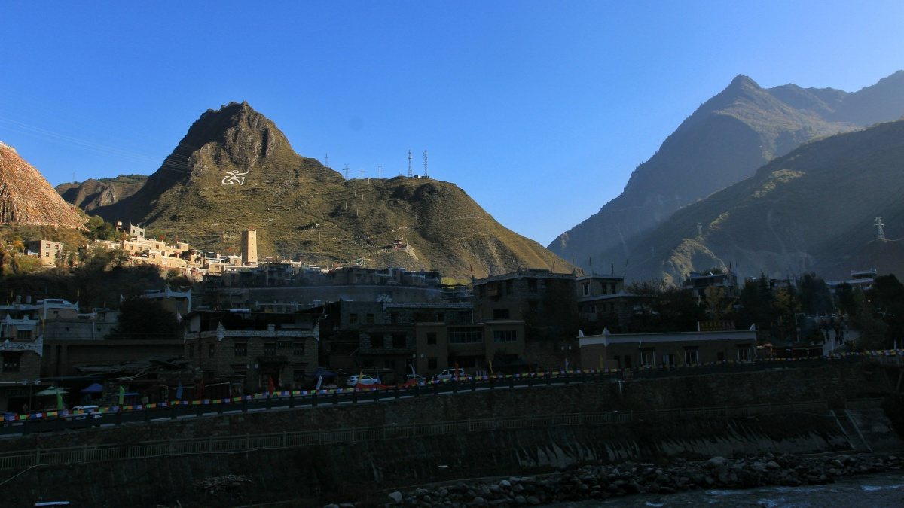
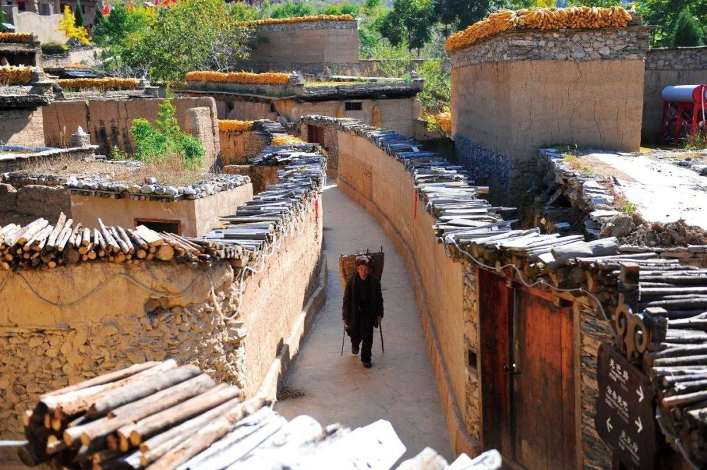
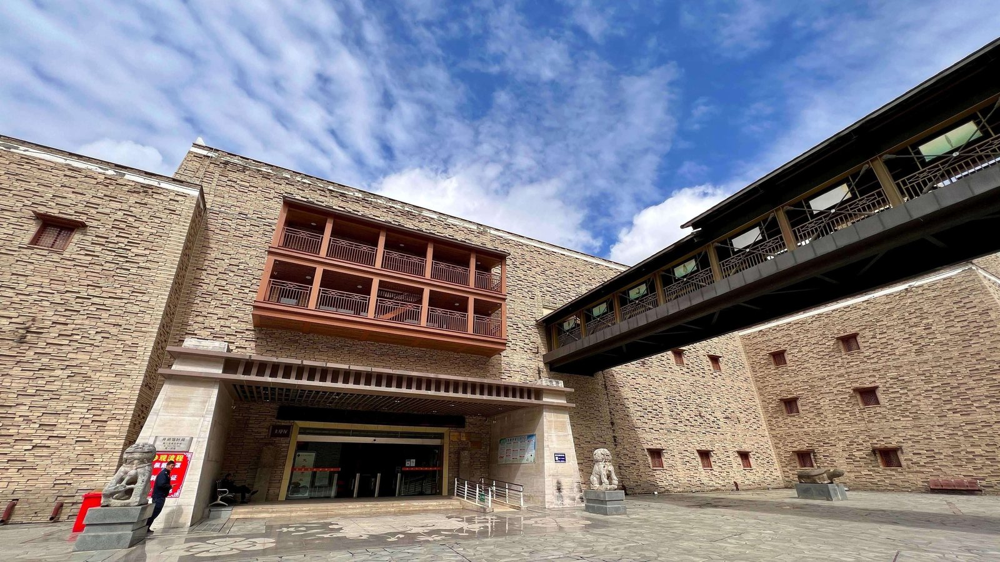
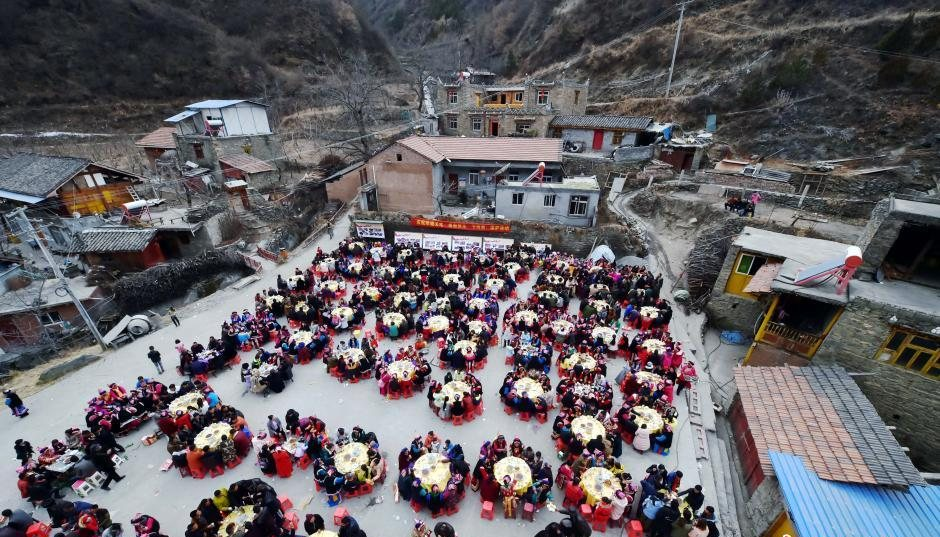
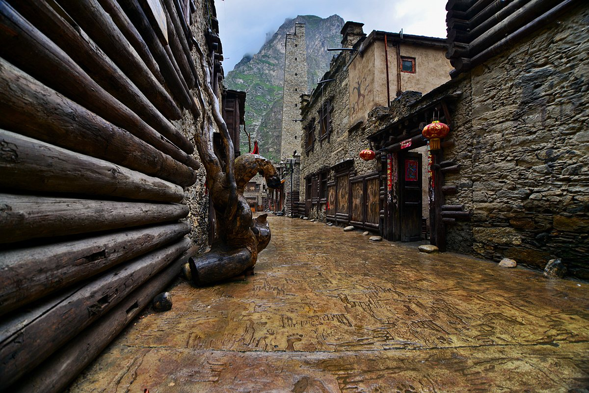

6 处 · 当地实拍
本页照片均为 羌区当地实拍，取自公开报道与摄影社区，非 AI 生成；点击卡片可看大图、读简介、听当地羌语发音。
实拍
中国古羌城 · 羌碉群
茂县古羌城
阿坝州 · 茂县 · 凤仪镇
全国最大的羌族聚居县，中国古羌城坐落于此。雄伟的碉楼群依山而建，夕阳西下时金色洒满石墙，远处云海翻涌，是体验羌族文化的首选之地。

实拍 甘堡藏寨 · 碉楼与藏式民居甘堡藏寨
阿坝州 · 理县 · 甘堡乡
建于山崖之上的百年藏寨，白色石屋与高耸碉楼鳞次栉比。五彩经幡在雪山下飘扬，博巴森根锅庄舞代代相传，是藏羌文化走廊上的明珠。

实拍 萝卜寨 · 黄泥巷道与晾晒的玉米萝卜寨
阿坝州 · 汶川县 · 雁门乡
被誉为"云朵上的街市"，是迄今为止发现的世界上最大、最古老的黄泥羌寨。黄泥垒筑的房屋层层叠叠，晨雾起时村寨如漂浮在云海之上。

实拍 中国羌族博物馆 · 正门与碉楼羌族博物馆
阿坝州 · 茂县 · 中国古羌城内
中国唯一的羌族博物馆，馆藏上万件羌族文物。建筑融合羌式碉楼与传统殿堂风格，馆内展示羌绣、羌笛、释比法器等珍贵文化遗产。

实拍 曲谷羌寨 · 基勒俄足节坝坝宴曲谷乡
阿坝州 · 茂县 · 曲谷乡
深藏岷山峡谷之中的古老羌乡，神树林立，晨雾缭绕。这里是羌族释比文化保存最完整的地方，被誉为"释比之乡"，保留着最古老的羌语发音。

实拍 羌人谷 · 石巷、碉楼与峡谷羌人谷
阿坝州 · 汶川县 · 龙溪乡
传说中羌人南迁的定居之地，峡谷幽深，古祭塔矗立于峭壁之上。红绸系满神树，阳光穿透云层洒下金色光芒，神秘而庄严，是探寻羌族根源的秘境。
×
当地实拍
1 / 6